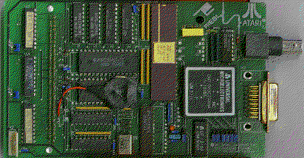
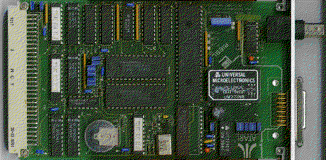

Previous
Next
TOC
Die Riebl Netzwerkkarten (ATARI Network System)
Die Netzwerkkarte für die MegaST Computer wird nach entfernen der ab-
nehmbaren Plastikabdeckung an der Rückseite des Computers, einfach in
den Megabus gesteckt. Anschließend wird noch das Spannungsversorgungs-
kabel auf den freien Stecker gesteckt, der sich links vom dem Steck-
platz befindet wo das Netzteil eingesteckt ist.
An den Jumpern sollte man bei dieser Karte keine änderung vornehmen!
Die Batterie dient dem Datenerhalt der NODE-ID und weiteren Daten die
mittels des Configurationsprogrammes auf der Karte selber abgespei-
chert werden.
Die Riebl Bus Karte verfügt über 64 KBytes shared memory und ist zur
Netzwerkkommunikation ebenfalls (wie die Pams Net Produkte auch) mit
dem AM7990PC Chipset von AMD ausgestattet.
Die eingesetzte Technologie ermöglicht extrem hohe Transfergeschwin-
digkeiten über das Netzwerk. So werden effektive Übertragungsraten
von bis zu 550 Kilobyte pro Sekunde erzielt. Auf der Rückseite der
Platine befindet sich sowohl ein Cheapernet- als auch ein Ethernet-
ausgang. Die Karte ist werksseitig auf Cheapernet eingestellt.

Die VME Bus Karte für die MegaSTE und TT030 Computer.

weiterblättern
Kapitel Die Riebl Netzwerkkarten, Seite 1